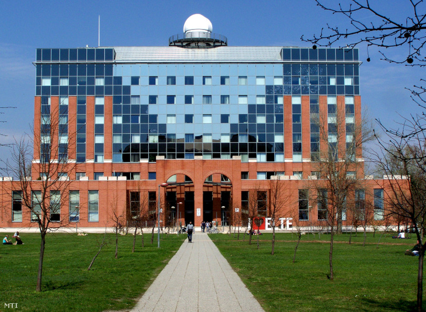

Alaplabor, fizika BSc
- Egyszerű mozgások mérése: Leírás
- Szilárd testek sűrűségének mérése: Leírás Jegyzőkönyv
- A lineáris erőtörvények vizsgálata és a rugóállandó meghatározása: Leírás Jegyzőkönyv
- A dinamika alaptörvényeinek vizsgálata Fletcher kocsival: Leírás
- Optikai alapmérése: Leírás Jegyzőkönyv
- Forgómozgások vizsgálata: Leírás
- Állóhullám kötélen: Leírás Jegyzőkönyv
- Folyadék beslő surlódásának mérése: Leírás